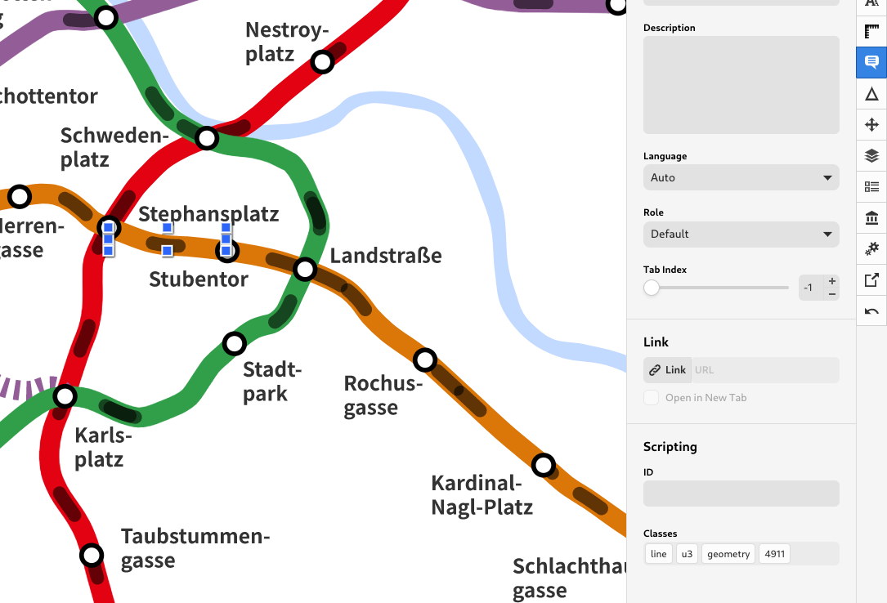

live u-bahn vienna
Visualizing the Viennese U-Bahn network
Austria's OGD (Open Government Data) policy makes a variety of datasets accessible. On this project, we focus on Vienna public transportation. Wiener Linien publishes live updates of their network using an open access API. We created a live metro map of Vienna as an interface of this API to apprehend public transportation schedules and grasp a live overview of the network. We used adapted design strategies and animations to effectively communicate the raw information we get from the API.
The project was developed using HTML, CSS and JS only. We explored the basics of SVG to animate all individual trains. The animation is triggered using the API connection to the city server (one request every 30 seconds). A simple algorithm interpolates the time of departure of each train based on the API response.
allocation of classes to a train on line U3 [screenshot]

This project is meant to facilitate the understanding of the public transportation network in Vienna. We want to communicate information on a larger scale of understanding with a global overview of the city's metro system. This map can also serve other purposes such as the analysis of the u-bahn network. By facilitating information dissemination of public transportation we invite users and actors of the field to use them more often, more efficiently and as a tool for improvement. This map is also a visual exploration of what can be done with open access APIs and simple SVG animation.
Live Underground Vienna was originally developed in the frame of a university project at the Technical University of Vienna. We are now improving details and developing further functionalities to achieve a fully usable web application.
Authors: Ander Palacios Fraile & Luka Laval
Supervisors: Olesia Ignateva & Florian Ledermann